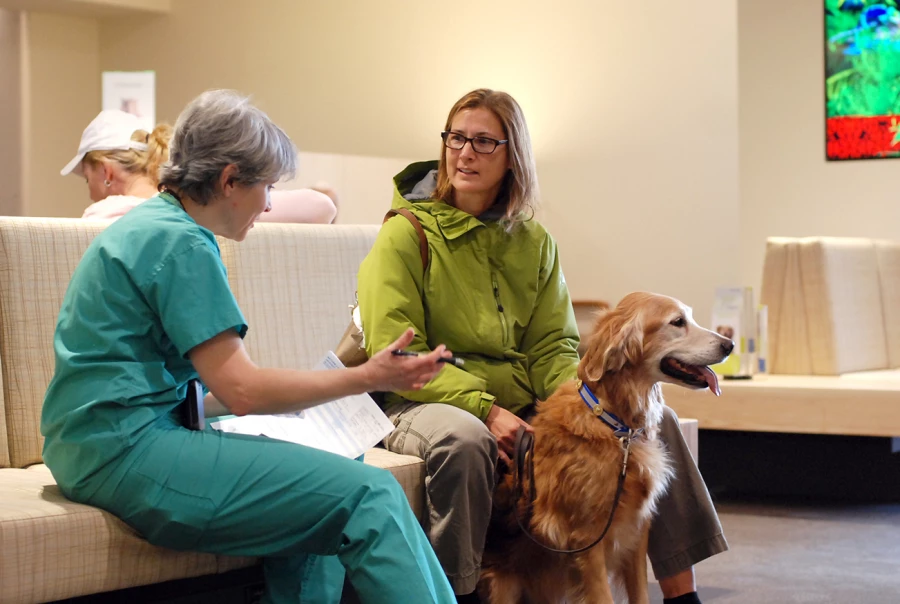

Sobre nosotros

La Clínica Veterinaria Nerón es un centro especializado en el cuidado de mascotas ubicado en [dirección]. Nuestro equipo de veterinarios altamente capacitados y amantes de los animales se dedica a brindar atención de calidad a tus seres queridos peludos.

En Nerón, nos preocupamos por el bienestar integral de tus mascotas. Ofrecemos una amplia gama de servicios veterinarios, desde consultas generales y chequeos de salud hasta cirugías, vacunaciones, desparasitaciones y tratamientos especializados. Nuestro objetivo principal es mantener a tus mascotas sanas y felices. Contamos con instalaciones modernas y equipamiento de vanguardia para garantizar un diagnóstico preciso y un tratamiento efectivo. Nuestro quirófano está equipado con tecnología avanzada, y tenemos laboratorio y sala de radiología para realizar análisis clínicos y diagnósticos por imagen. En la Clínica Veterinaria Nerón, nos esforzamos por crear un ambiente acogedor y amigable tanto para las mascotas como para sus dueños. Nuestro equipo está comprometido en brindar un trato amable y respetuoso, y nos enfocamos en el manejo del dolor y el estrés de los animales durante su visita.
Además, ofrecemos educación a los propietarios sobre cuidados y prevención de enfermedades para que puedan proporcionar el mejor cuidado a sus mascotas en casa. Confía en nosotros para el cuidado de tus seres queridos peludos. Estamos aquí para ayudarte. Visítanos en nuestra ubicación, llámanos al 0800-202244 o visita nuestro sitio web para obtener más información. ¡Gracias por considerar a la Clínica Veterinaria Nerón para el cuidado de tus mascotas!